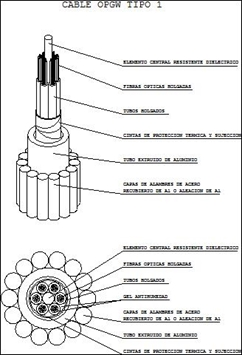

Siempre es más fácil conocer las normas ENEL-CODENSA
Rolex Rolex gold watch, compared with ordinary materials, gold watches are often expensive, but the replica rolex gold watch has the role of swiss replica watches hedging, so that it often becomes the first choice for collectors. The gold watch has value in the world, largely because the omega replica watch brand launched a commemorative limited edition watch or a replica hublot complex movement process or artistic attainments deep watches, mostly preferred gold precious metals such material. These watches tend to have a strong hedging function, therefore, Rolex Rolex gold watch reputation.

ET-AT105 Cables de fibra óptica OPGW para líneas de AT
Datos adicionales
Número de especificación
ET-AT105
Fecha de vigencia
01/09/2009
Herramientas adicionales
- Contenido Ocultar
- 1. OBJETO
- 2. NORMAS APLICABLES
- 3. REQUERIMIENTOS DE CALIDAD
- 4. CAMPO DE APLICACIÓN
- 5. CARACTERÍSTICAS CONSTRUCTIVAS
- 5.1 CARACTERÍSTICAS GENERALES:
- 5.2 CARACTERÍSTICAS MECÁNICAS Y ELÉCTRICAS DEL CABLE
- 5.3 COMPOSICIÓN
- 5.4 TIPO DE FIBRA ÓPTICA: MONOMODO CONVENCIONAL
- 5.5 COLORES
- 6. INSPECCIÓN TÉCNICA Y PRUEBAS
- 6.1 PRUEBAS TIPO
- 6.2 PRUEBAS MUSTREO Y DE ACEPTACIÓN EN FÁBRICA
- 6.3 PRUEBAS DE RUTINA
- 6.4 RECEPCIÓN E INFORMACIÓN TÉCNICA (EMBALAJE Y TRANSPORTE)
- 7. INFORMACIÓN A PRESENTAR EN LA OFERTA TÉCNICA
- 8. GARANTÍA
1. OBJETO
El objeto de la presente especificación es fijar las características ópticas, mecánicas y eléctricas que deben cumplir los cables de fibra óptica OPGW, a ser empleados en líneas de alta tensión existentes en CODENSA S.A. ESP.2. NORMAS APLICABLES
Para el diseño, fabricación y pruebas, los cables de fibra óptica así como sus componentes, deberán cumplir con las prescripciones de la última versión de alguna de las siguientes normas:- IEC 60794-4-10: Cables de fibra óptica: Cables aéreos ópticos para líneas de transmisión eléctrica. Especificación para OPGW (Cables ópticos de guarda.)
- IEEE-1138: Norma de Construcción de cables compuestos de fibra óptica y alambres de guarda para uso en líneas de transmisión eléctrica.
3. REQUERIMIENTOS DE CALIDAD
El oferente deberá tener implementado un sistema de calidad basado en las normas de la serie ISO -9001 del año 2000, el cual cubra los procedimientos para diseño, manufactura, instalación, servicios, inspecciones y pruebas. Este sistema de calidad deberá tener la correspondiente certificación vigente.4. CAMPO DE APLICACIÓN
Esta especificación esta desarrollada para cables de fibra óptica que se utilizarán en líneas aéreas con voltajes iguales o superiores a 57.5 kV, en ambientes normales y severos de contaminación, alto grado de humedad y neblina. Sus características deberán adecuarse a dichas condiciones de servicio.5. CARACTERÍSTICAS CONSTRUCTIVAS
5.1 CARACTERÍSTICAS GENERALES:
Consiste en un cable de tierra con capas exteriores de acero recubierto de aluminio o de aleación de aluminio, arrollados sobre un tubo de aluminio extruido en cuyo interior se aloja el núcleo óptico.En el interior del cable (tubo extruido de aluminio), se aloja el núcleo óptico formado por un elemento central mecánicamente resistente y por tubos holgados (alojan las fibras ópticas holgadas), en cuyo interior se dispondrá de un gel anti humedad. También el núcleo óptico se rellenará de un gel anti humedad. Todo el conjunto estará envuelto por unas cintas de sujeción y protección térmica.

Figura 1. Composición Cable OPGW (cable de guarda con hilos de fibra óptica)
5.2 CARACTERÍSTICAS MECÁNICAS Y ELÉCTRICAS DEL CABLE
| CABLES OPGW Icc 19 kA/0,3 s | |
| Número de fibras | 24 |
| Diámetro cable (mm) | 14 |
| Carga de rotura (Kg) | 7944 |
| Peso (Kg/Km) | 547 |
| Módulo de elasticidad (Kg/mm2) | 10826 |
| Coeficiente de dilatación (x10-6 °C-1) | 15.77 |
| Radio de curvatura (mm) (durante la dilatación) | 400 |
| Radio de curvatura (mm) (en el dispositivo de freno) | 560 |
| Radio de curvatura (mm) (depués de la instalación) | 280 |
| Resistencia óhmica a 20 ºC (ohm/Km) | 0.406 |
5.3 COMPOSICIÓN
5.3.1 Núcleo óptico- Soporte central: dieléctrico resistente a la tracción.
- Fibras ópticas: 12 y 24
- Segunda protección: holgada en el interior de tubos, con cintas de protección, sujeción tanto térmica como mecánica y gel protector. No se instalarán fibras de diferente tipo por el mismo tubo.
5.3.2 Tubo de protección del núcleo óptico
Tubo de aluminio estanco y extrusionado de un espesor igual o superior a 1,1 mm. El relleno entre el tubo de aluminio estanco y el núcleo óptico se efectuará con gelatina hidrófuga.
5.3.3 Capa exterior
Coronas de alambres que proporcionarán las características tanto mecánicas como eléctricas. En ambientes agresivos se utilizarán alambres con diámetro > 3 mm.
5.4 TIPO DE FIBRA ÓPTICA: MONOMODO CONVENCIONAL
La fibra debera ser del tipo monomodo cuya longitud de onda de dispersión nula estará situada en torno a 1300 nm, optimizada para uso en la región de longitud de onda de 1310 nm, y que puede utilizarse también a longitudes de onda en la región de 1550 nm, (en las que la fibra no está optimizada).5.4.1 Características de la fibra
| Diámetro campo modal (a 1310 nm) | 9,5± 0,5 um. |
| Diámetro del revestimiento | 125 mm ± 2,4 % del valor nominal |
| No circularidad del revestimiento | < 2% |
| No circularidad del campo de propagación monomodal | < 6% |
| Error de concentricidad núcleo/revestimiento | ± 1um |
| Atenuación para fibra SM lambda = 1310 nm | <= 0,36 dB/Km Se verificará la no existencia de discontinuidad |
| Atenuación para fibra SM lambda = 1550 nm | <= 0,23 dB/Km Se verificará la no existencia de discontinuidad |
| Longitud de onda de corte | entre 1100 y 1280 nm. |
| Coeficiente de dispersión cromática Entre 1285 y 1330 nm | <= 3,5 ps/(nm.Km) |
| Entre 1525 y 1575 nm | <= 20 ps/(nm.Km) |
5.5 COLORES
Cada una de las fibras es coloreada para su fácil identificación de acuerdo con lo especificado en la norma IEC 603046. INSPECCIÓN TÉCNICA Y PRUEBAS
El cable de fibra óptica OPGW, deberá cumplir con todas las exigencias de las pruebas de tipo, aceptación y de rutina, descritas en la norma IEC 60794-4-10.Las pruebas tipo deberán ser realizadas y certificadas por laboratorios independientes de reconocido prestigio internacional.
6.1 PRUEBAS TIPO
La finalidad de estos ensayos será verificar las principales características de un cable de fibra óptica OPGW.Las siguientes pruebas Tipo deben ser efectuadas:
- Prueba de tracción.
- Prueba de Esfuezo-tensión
- Prueba de resistencia de rotura
- Prueba de torsión (sheave)
- Prueba de vibración
- Prueba de Creep
- Prueba de ciclos térmicos
- Prueba de penetración de Agua
- Prueba de corto circuito
- Prueba de resistencia al rayo.
6.2 PRUEBAS MUSTREO Y DE ACEPTACIÓN EN FÁBRICA
Se deberan realizar estos ensayos para demostrar el adecuado diseño, de los materiales y del proceso de fabricación (tecnología) del cable de fibra óptica OPGW.Las pruebas típicas son:
- Diseño
- Inspección visual.
- Longitud de paso
- Diámetro del cable
- Peso del cable
- Resistencia DC del cable
- Prueba de resistencia de rotura (hilos).
- Pruebas de atenuación en la fibra.
Estas pruebas deberán ser realizadas por el fabricante y los resultados de los ensayos entregados a CODENSA S.A. ESP.
Opcionalmente, en el caso que se indique, Codensa asistirá a dichas pruebas por lo que se deberán incluir en la oferta los costos asociados a alojamiento, alimentación, transporte, seguro, tasas de embarque, impuestos, visas, gastos menores y otros propios de la actividad por realizar.
6.3 PRUEBAS DE RUTINA
La finalidad de estas pruebas es eliminar el cable de fibra óptica OPGW que tengan defectos de fabricación Se aplicará según IEC 60794-4-10 punto 11 “Routine test”. Es responsablilidad del fabricante su realización.- Inspección de entrada de materia prima de acuerdo con el plan de manufactura de calidad.
- Coeficiente de atenuación de la fibra
- Diseño del cable
- Longitud de paso
- Calidad de la superficie del cable
- Diámetro del cable
- Diámetro de los componentes del cable
- Características eléctricas y mecánicas de los componentes del cable.
6.4 RECEPCIÓN E INFORMACIÓN TÉCNICA (EMBALAJE Y TRANSPORTE)
Los cables de fibra óptica deberán ser cuidadosamente embalados y debidamente protegidos para resistir la manipulación durante las operaciones de embarque, desembarque y transporte internacional y nacional.Deberán ser empacados preferiblemente en cajones de madera u otro material que aseguren un transporte aceptable y seguro por parte de un transportista regular hasta el punto de entrega requerido por el comprador. Cada cajón deberá ser marcado con un código seleccionado por el fabricante con el propósito de identificar el lote. Estas marcas deberán ser resistentes a la intemperie y a condiciones anormales durante el transporte y almacenaje.
Los cables deberán estar fijados de una forma adecuada tal que se asegure la inmovilización de los mismos durante el transporte y almacenaje. Los cajones de madera deberán tener un diseño que permita su manipulación con vehículo montacargas.
En todos los cajones, deberá incluirse en una tarjeta dentro de un bolsillo plástico externo, que resista el clima, el transporte y manejo, en una parte claramente visible, la longitud del cable, el nombre del comprador y el número de la orden de compra.
7. INFORMACIÓN A PRESENTAR EN LA OFERTA TÉCNICA
El oferente deberá entregar dentro de su propuesta técnica la siguiente información:- Certificado de gestion de calidad ISO 9001.
- Tablas de características técnicas garantizadas diligenciadas em su totalidad, según Anexo 1.
- Listado de suministros similares, con certificado de por lo menos 2 clientes, en los cuales se afirme que conductores similares a los ofertados, han presentado un comportamiento favorable.
- Folletos y Documentacion técnica del conductor y los herrajes.
- Desviaciones técnicas de la oferta.
- Copia de las normas técnicas empleadas en la fabricación y pruebas del cable y los herrajes.
Es requisito obligatorio para cumplir técnicamente, la presentacion de la totalidad de la información anteriormente solicitada.
8. GARANTÍA
El fabricante se comprometerá a una garantía sobre los cables y herrajes por un período mínimo de 3 años, a establecer inmediatamente desde la recepción, obligándose a reponer el tramo del mismo así como los materiales y trabajos asociados, que en dicho período pudieran resultar defectuosos.ANEXO 1. TABLAS DE CARACTERÍSTICAS TÉCNICAS GARANTIZADAS
Las Tablas de Características Técnicas son reproducibles y deberán ser diligenciadas en su totalidad y firmadas por el proponente.
Aspectos generales de los proponentes
1. Nombre del fabricante ......................................................................
2. Nombre de la fábrica .......................................................................
3. País de la fábrica .........................................................................
4. Dirección ..................................................................................
5. E- Mail ....................................................................................
6. Nombre persona a contactar ......................................................
7. Teléfono / Fax .............................................................................
8. Nombre del representante ...................................................................
9. Dirección ..................................................................................
10. E- Mail ...................................................................................
11. Nombre persona a contactar .....................................................
12. Teléfono / Fax ............................................................................
ANEXO 1. TABLA Nº 1. CARACTERÍSTICAS TÉCNICAS GARANTIZADAS - OPGW
| ÍTEM | DESCRIPCIÓN | Unidad | SOLICITADO | OFRECIDO | Observación |
| 1 | Norma de Fabricación: | - | IEC 60794-4-10 o IEEE-1138 | ||
| 2 | Fabricante y País de origen: | - | |||
| 3 | Referencia Cable: | - | |||
| 4 | Fibras ópticas | ||||
| 4,1 | Número de hilos | Un | 24 | ||
| 4,2 | Material de los hilos | Norma ITU-T G.652-D | |||
| 5 | Tubo de protección | - | |||
| 5,1 | Espesor | mm | 0,35 | ||
| 5,2 | Diámetro externo | mm | 3 | ||
| 5,3 | Material | - | PBT 1Ttubo/12 fibras | ||
| 6 | Pasta tamponante | ||||
| 6,1 | Material | - | Gel pulibutéica | ||
| Tixotrópica/ Gel | |||||
| Silicona Absorvedora de hidrógeno | |||||
| 7 | Cinta de recubrimiento | ||||
| 7,1 | Material (1 alambre) | - | Poliaramida 3160 HM | ||
| 7,2 | Material (6 alambre) | - | Poliaramida 1420 HM | ||
| 8 | Cubierta Metálica | ||||
| 8,1 | Espesor | mm | 1,5 | ||
| 8,2 | Material | - | Aluminio 1350 | ||
| 8,3 | Diámetro externo | mm | 7 | ||
| 9 | Corona exterior | ||||
| 9,1 | Número de hilos | Un | 9 | ||
| 9,2 | Diámetro externo | mm | 3,5 | ||
| 9,3 | Material | - | Acero cubierto de aluminio | ||
| 9,4 | Norma material | - | 20.3% IACS ASTM B415 | ||
| 10 | Sección metálica | mm2 | 113 | ||
| 11 | Diámetro exterior nominal | mm | 14 | ||
| 12 | Paso | mm | 190 | ||
| 13 | Carga de rotura nominal (UTS) | kgf | 7944 | ||
| 14 | Máxima tracción en las peores condiciones climáticas | kgf | 3178 | ||
| 15 | Peso nominal | kg/km | 547 | ||
| 16 | Módulo de elasticidad | kgf/mm^2 | 10826 | ||
| 17 | Coeficiente de dilatación lineal | 1/ºC | 15.77x10-6 | ||
| 18 | Radio mínimo de curvatura | - | |||
| 18,1 | Durante instalación | mm | 400 | ||
| 18,2 | En el dispositivo de freno | mm | 560 | ||
| 18,3 | Después de la instalación | mm | 280 | ||
| 19 | Clase de descarga atmosférica (CREM=60%) | C | 50 | ||
| 20 | Máxima corriente de corto circuito | (kA)^2s | 107 | ||
| Ti= 40 ºC; Tf= 180 ºC; t= 0.3 s; Icc= 19 kA | |||||
| 21 | Resistencia eléctrica del cable en (CC @ 20 ºC) | O/km | 0,406 | ||
| 22 | Coeficiente de corrección de la resistencia eléctrica a temperatura del cable | 1/ºC | 3.7X10-3 | ||
| 23 | Temperatura de operación | ºC | -30/+70 | ||
| 24 | Pruebas de muestreo | ||||
| 24,1 | Diseño | - | si | ||
| 24,2 | Inspección visual de los elementos del cable | - | si | ||
| 24,3 | Diámetro del cable | - | si | ||
| 24,4 | Peso del cable | - | si | ||
| 24,5 | Resistencia DC del cable | - | si | ||
| 24,6 | Prueba de resistencia de rotura | - | si | ||
| 24,7 | Coeficiente de atenuación de la fibra | - | si | ||
| 25 | Pruebas de rutina | - | |||
| 25,1 | Inspección visual | - | si | ||
| 25,2 | Coeficiente de atenuación | - | si | ||
| 25,3 | Diseño del cable | - | si | ||
| 25,4 | Longitud de la capa de armadura | - | si | ||
| 25,5 | Calidad de la superficie del cable | - | si | ||
| 25,6 | Diámetro del cable | - | si | ||
| 25,7 | Diámetro de los componentes del cable | - | si | ||
| 25,8 | Características eléctricas y mecánicas de los componentes del cable | - | si | ||
| 26 | Período de Garantía | años | 3 | ||
| 27 | Certificado de Calidad ISO 9001 | - | si |
ANEXO 2. TABLA Nº 1. CARACTERÍSTICAS TÉCNICAS GARANTIZADAS PATCH CORDS
| ÍTEM | DESCRIPCIÓN | Unidad | SOLICITADO | OFRECIDO | Observación |
| 1 | Tipo de conector | - | FC-PC, simplex | ||
| 2 | Cubierta del cable | - | ONFR y kevlar | ||
| 3 | Color | - | Amarillo | ||
| 4 | Tipo de fibra | Monomodo | |||
| 5 | Longitud | m | 6 m | ||
| 6 | Pérdidas directas | dB | < 0.3 | ||
| 7 | Pérdidas de retorno | dB | > 45 |